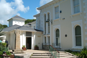
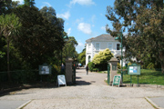
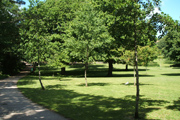

Penlee House Gallery & Museum in Penlee Park
Penlee House Gallery and Museum (01736 363625)
Morrab Road, Penzance, Cornwall TR18 4HE
www.penleehouse.org.uk
Penlee House Gallery & Museum is an elegant gallery set within a Victorian house and park. Changing exhibitions mainly feature famous Newlyn School and Lamorna Group artists. Newlyn School artists include Stanhope and Elizabeth Forbes, Walter Langley, Harold Harvey and Norman Garstin, while the Lamorna Group includes Laura Knight, 'Lamorna' Birch and Alfred Munnings.
 Penlee House |
 Penlee Park Entrance |
 Penlee Park |
History of Penlee House
Penlee House and Park were commissioned by John Richards Branwell as a private estate and believed to have been designed by the local architect John Matthews in the highly fashionable Italianate style. In 1918 Penlee was bestowed to Edith and then Alfred Branwell, who with the help of a gardener trained at Kew, set about transforming the park with numerous rare plants, flowers and trees which can still be enjoyed today. The house and park served as a family estate to the Branwell's for many decades.
At the end of World War II the owners of the Penlee Estate were planning to build on the land and to demolish the house. Mayor Robert Thomas opened a public appeal and purchased the estate as a War Memorial in 1946. The estate is about 15 acres, and the purchase price was £13,000. It was decided to use the house as a museum and arts centre.
The Museum was opened in its current home by Sir Cyril Fox on 24th June 1949. The Museum was administered by the Borough Librarian until 1974 when Penzance lost its borough status and the Museum became the property of Penwith District Council. In 1985 ownership of the Penlee Estate reverted back to Penzance Town Council.
In the 1990s funding was raised from various sources to refurbish and develop the Museum and Art Gallery. The building was completely redeveloped adding gallery spaces, refurbishing the museum, along with adding the Orangery Cafe and shop. Care was taken to preserve the feel of the original genteel Victorian home, while providing the perfect place for the display and care of the collections.
Penlee House re-opened in its current form in 1997 and now offers changing displays drawn from its own collections, supplemented by loans from public and private collections, reflecting the unique heritage of the West Cornwall.
Find out more about Art & Artists in West Cornwall
The Orangery Cafe
- Orangery Cafe & Coffee Shop (01736 361325)
Penlee House, Morrab Road, Penzance
www.penleehouse.org.uk
During your visit to the Museum or Park, relax for a while in the Orangery Coffee Shop, with its sun-bathed terrace overlooking the park.
The Orangery is open during normal museum hours for morning coffee, afternoon tea with home-baked cakes and pastries, freshly prepared sandwiches, salads and
light lunches.
Lunch is served between 12.00 and 3.00 pm
Find out about other Cafe's in the Penzance area
Penlee House Logo © Penlee House | Pictures © Purely Penzance